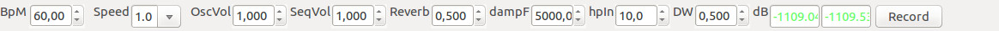

Top Panel

On top panel is possible to set some global settings.
-
BpM - set the global beats per minutes
-
Speed - set the speed at which events will happen related to Global BpM, the highest the value the slower actions will be
-
OscVol - set the global output volume for the oscillators
-
SeqVol - set the global output volume for the percussive sequencers
-
Reverb - determine how much reverb (how big is the simulated room) will be applied to the output
-
dampF - set the frequency damping of the global reverb
-
hpIn - set the frequency of the high pass filter at the reverb input
-
DW - set the mix between direct and reverberated signal (eg: 0.000 - direct only,
1.000 - reverb only, 0.500 50% dry 50% reverb)
-
dB - indicates the output volumes for left and right channels
-
Record - a buttont to start and stop recording of the output. It creates a wav file in the recordings folder
Back to main page